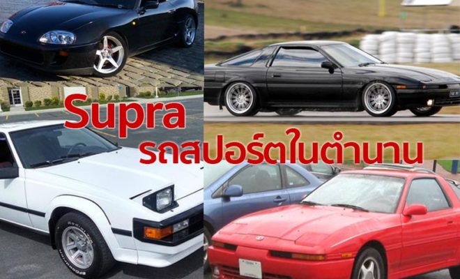
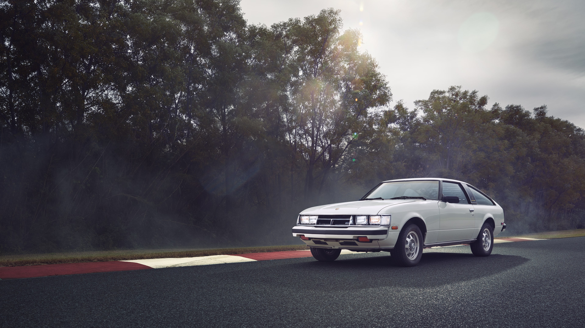
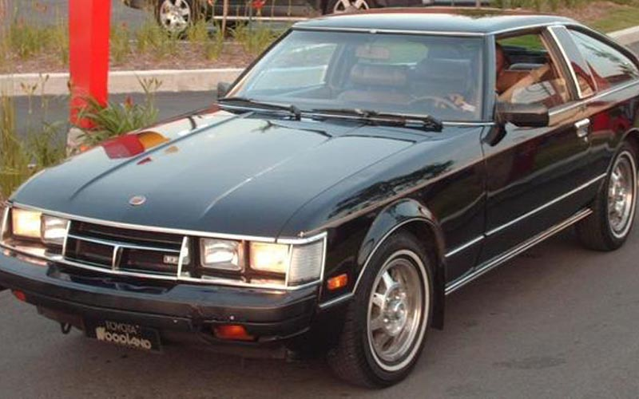
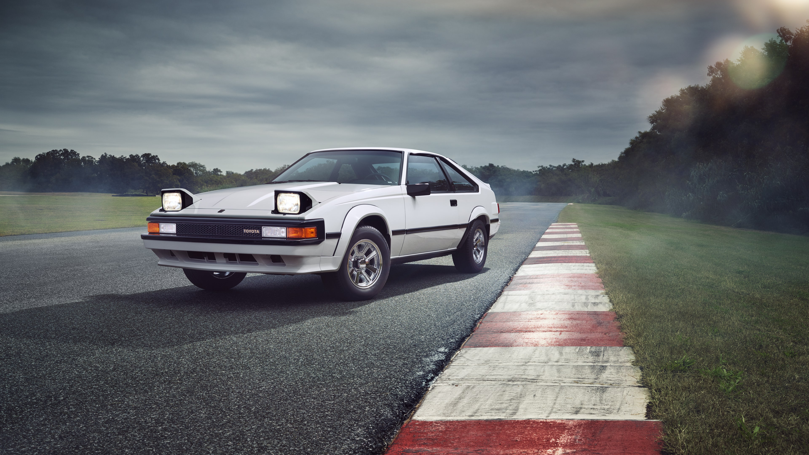
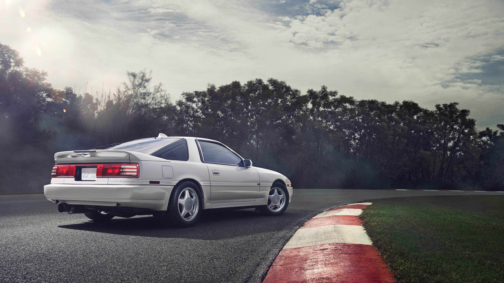
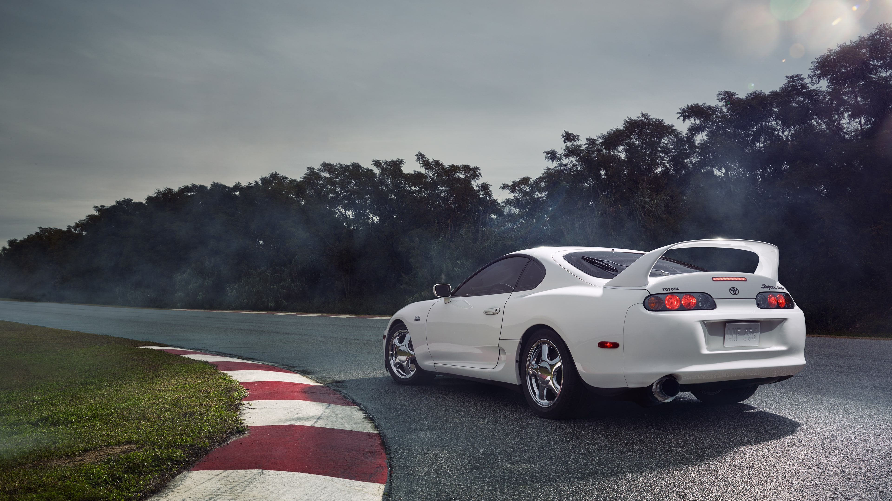

History TOYOTA SUPRA ประวัติรถสปอร์ตในตำนานจากแดนอาทิตย์อุทัย

ถ้าพูดถึงค่ายรถ Toyota ก็คงจะมีรถสปอร์ตรสายพันธ์เก๋าอย่าง Supra ที่ถูกผลิตขึ้นในช่วงปี 1978 – 2002 เรียกได้ว่าเป็นรถในตำนานที่นิยมกันเป็นอย่างมากในยุค 90 ซึ่งจริงๆแล้วรูปทรงของ Supra ถูกต่อยอดมาจาก Toyota Celica นั่นเองส่วนรายละเอียดและจะมีเจนเนอเรชั่นไหนที่เด็ดๆกันบ้างนั้นลองมาดูกันเลย นับตั้งแต่สมัย 1986 รถ Toyota Supra ได้ถูกแยกโมเดลออกมาจากรุ่น Celica หลายคนจึงมักคิดว่าทั้งสองรุ่น มีความเกี่ยวข้องกันเมื่อถึงปี ค.ศ. นี้จึงมีการเปลี่ยนมาใช้คำว่า Supra แล้วอย่างถาวร โดยแบ่งเป็น 4 เจนเนอเรชั่นดังนี้
เจนเนอเรชั่น 1 A40(1978-1981)
สำหรับ Supra ตัวนี้เรียกว่ามีคุณลักษณะและรายละเอียดเทียบเท่ากับ ฟอร์ด มัสแตง ของสหรัฐอเมริกา โดยคันนี้มีลักษณะตัวถัง 2 แบบ คือ liftback 3 ประตู และ hardtop 2 ประตู เครื่องยนต์ 1,988 ซีซี รุ่นปี 1978 โตโยต้าได้ผลิตรถยนต์ Supra ขึ้นที่ประเทศญี่ปุ่น หรือที่คุ้นหูกันในชื่อ เซลิก้า เอ็กซ์เอ็กซ์ โดยมีให้เลือกด้วยกันทั้ง 2แบบคือ รุ่นที่ให้กำลัง 123 แรงม้า และรุ่นที่ให้กำลัง 110 แรงม้า มาพร้อมเครื่องยนต์ควบคุมหัวฉีดด้วยระบบอิเล็กทรอนิกส์ ที่สำคัญรุ่น 110 นี้ยังถูกส่งออกไปขายต่างประเทศในปี 1979 อีกด้วย
|
รุ่นปี 1980 – 1981 ในปีนี้มีการปรับปรุงใหม่ด้วยเครื่องยนต์ 2,759 ซีซี ให้กำลัง 116 แรงม้า ส่วนระบบเกียร์นั้นเป็นระบบอัตโนมัติ สำหรับรุ่นนี้ถูกออกแบบมาในแนวสปอร์ต เพราะให้ความเร็วในการวิ่งอยู่ที่ 0 – 60 ไมล์ต่อชั่วโมง เพียงแค่ใช้เวลาแค่ 10.24 วินาทีเท่านั้น |
 |
เจนเนอเรชั่นที่ 2 A60(1981–1986)

ในช่วงปลายปี 1981 โตโยต้าได้ทําการออกแบบรถโตโยต้า เซลิก้า ซูปร้า ใหม่ (redesign) จนเสร็จสมบูรณ์ แล้ว ทําการผลิตออกมาในช่วงปี 1982 สําหรับในญี่ปุ่นแล้วจะรู้จักรถรุ่นนี้ในชื่อ เซลก้า เอ็กซ์เอ็กซ์ (Celica XX) แต่ใน ต่างประเทศจะรู้จักในชื่อ เซลิก้า ซูปร้า รูปลักษณ์ภายนอกยังคงเอกลักษณ์ของความเป็นซูปร้าในเจนเนอเรชั่นก่อน แต่เทคโนโลยีต่างๆที่ซ่อนอยู่ภายในได้รับการปรับปรุงเปลี่ยนแปลงไปพอสมควร เช่นไฟหน้าที่เป็นแบบ pop-up headlight ทําให้ดูเป็นสปอร์ตมากยิ่งขึ้น เครื่องยนต์ก็ยังคงใช้แบบ inline-6 แต่ขนาดของเครื่องยนต์ใหญ่ขึ้น พละ กําลังมากขึ้น และยังได้มีการแบ่งรถรุ่นนี้ออกเป็น 2 ชนิดคือ L-type และ P-type โดยความแตกต่างระหว่างทั้งสอง ชนิดนี้คือ Perfomance Type (F-type) คือชนิดที่เน้นนํามาใช้งาน ส่วน Luxury-type (L-type) คือชนิดที่เน้นความ หรูหรามีระดับ
เจนเนอเรชั่นที่ 3 A70(1986-1993)

รุ่น 1985 – 1986 มาถึงรุ่นนี้ก้ยังมีการเปลี่ยนแปลงเหมือนเช่นเคย และก็ยังเน้นในส่วนของประสิทธิภาพที่ยังให้กำลังเครื่องยนต์ถึง 161 แรงม้า และทุกรุ่นที่ออกมาให้เฉยชมในปีนี้จะให้กำลังอยุ่ที่ 5 สปีดเท่าๆกันทุกรุ่น แต่ในเรื่องความเร็วที่มีการพัฒนาก็สามารถทำให้มันทำความเร็วได้จาก 0 ไปถึง 60 ไมล์ต่อชั่วโมงใช้เวลาเพียง 8.4 วินาที และยังทำความเร้วได้สูงสุดถึง 8.4 ไมล์ต่อชั่วโมง
สำหรับเจนเนอเรชั่นนี้ Supra ได้ทำการเปลี่ยนรูปแบบใหม่แตกต่างจาก Celica โดยสิ้นเชิงเรียกได้ว่าในเจนเนอเรชั่นนี้ Supra ได้เปลี่ยนผันมาเป็นรถสปอร์ตและมีเครื่องยนต์ที่แข็งแกร่งทรงพลังมากกว่าเดิม ด้วยเครื่องยนต์ขนาด 3.0 ลิตร 200 แรงม้า ส่วนในตัวระบเบรคก็มีการพัฒนาสามารถควบคุมรถเวลาเบรคฉุกเฉินได้มากขึ้นอีกด้วย
เจนเนอเรชั่นที่ 4 A80(1993-1998)

สำหรับเจนเนอเรชั่นนี้มีรหัสว่า A 80 มีรูปลักษณ์ค่อนข้างสวยงาม ล้ำสมัย ส่วนเครื่องยนต์ที่จะนำมาใช้คือ Toyota 2JZ-GE ให้กำลังอยู่ที่ 220 แรงม้า แรงบิด 210 ปอนด์ฟุต สำหรับเจนเนอเรชั่นนี้ ยอดขายของรถยนต์คูเป้ตกลงอย่างมากในอเมริกาเหนือ ไม่นาน Supra จึงถูกถอดออกจากตลาดในปี 1998 แต่ย้ายการผลิตไปอยู่ที่ประเทศญี่ปุ่นเมื่อถึงปี 2002 จึงเกิดการยุติการผลิตขึ้น